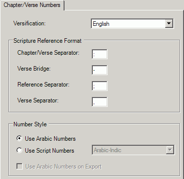

On the Chapter/Verse Numbers tab of the Scripture Properties dialog box:
-
Verify the properties that affect the editorial check:
Versification, Verse Bridge, and Number Style. -
If you need to modify any properties, click OK; otherwise, click Cancel.
